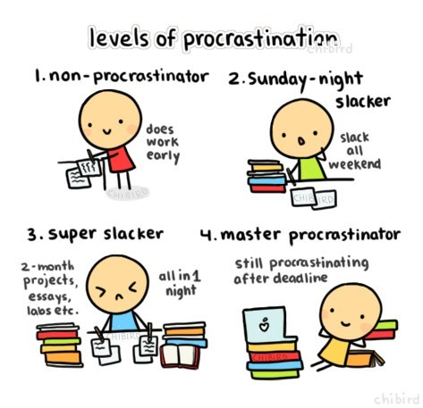
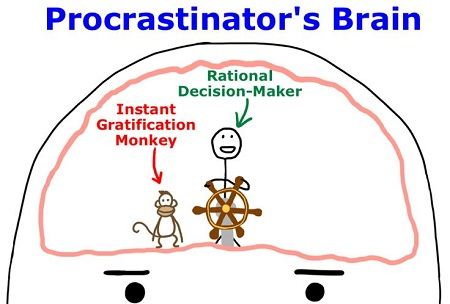
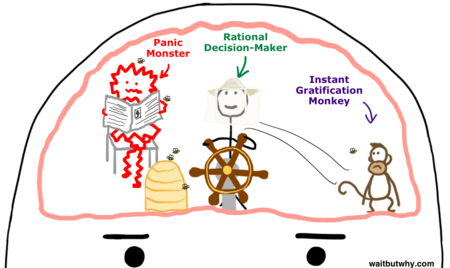

Procrastination (n): the action of delaying or postponing something.
Have you ever experienced this; you put off completing a certain assignment or studying for a particular test until the last night and then have to pull an all-nighter and sprint across college to get the assignment to the professor before the deadline.
You tend to avoid doing certain homework or studying for a test because you know that you will eventually do well. However, that might not be the case when college ends.
Wondered why we 'always' or 'almost always' procrastinate. Normally, when a student gets an assignment he/she spreads out his/her work in such a way so that they start a little slowly but get enough time so that everything is done and settled. You would have everything planned out but then you actually end up doing it the night before the deadline; and this is what happens every single time.
What goes on in the head of a procrastinator and why are they the way they are? The brains of the procrastinators are actually different than the brains of other people. Both brains have a rational decision maker but the procrastinators' brain also has an instant gratification monkey. Now what does this mean of the procrastinator?
Everything is fine until something like this happens:
Rational decision maker: 'This is a perfect time to get some work done.'
Gratification monkey: 'Nope, let's have some fun'
The rational decision maker will make the rational decision to do something productive but the monkey doesn't like that plan, he takes the control of the decision wheel and says 'Actually let's check out Whatsapp, Instagram, Facebook, Snap-chat before we start working and don't forget to check out the new episode of the Game of Thrones' and after that we are on a YouTube spiral which starts with videos of 'wind turbine powered cars' and ends with watching the latest Bollywood breakups.
And the gratification monkey grins triumphantly saying 'all of that is going to take a while so we don't have any time for work today sorry.'
What is happening here is : the instant gratification monkey is not a guy who you want behind the decision wheel, he entirely lives in the present moment, he has no memory of the past, no knowledge about the future and only cares about two things: EASY and FUN. This would work fine in the animal world. Now if we were to be a dog and were to spend our entire life doing nothing but just having fun that would have been just great. For the monkey, humans are just another animal species that are to be kept well fed, well-kept and are to be propagated to the next generation. This could have worked decades ago, but today we are in an advanced civilization and the monkey has no clue of it. That's why humans have the rational decision maker; we have the ability to see the future to have long term plans and act on them. The rational decision maker wants us to do whatever makes sense. It's perfectly alright to have leisure times when you go out with friends or attend a family function but other times it is necessary to do things that are more important and hard to do. That is where there is a conflict in the brain of the procrastinator and he/she ends up agreeing with the gratification monkey's view spending time in the easy and fun area rather than focusing on the work. The fun area is a place where leisure activities happen when they are not supposed to be happening. The fun happening here isn't actually fun because you are actually filled with guilt, anxiety, self-hatred.
But there is one thing the gratification monkey is afraid of, it's 'The panic monster'. Most of the time the panic monster is inactive and idle, but as soon as a deadline starts approaching or there is a delay the panic monster is in rapid action.
The whole system is a havoc when the panic monster arrives, and the gratification monkey upon the arrival of the panic monster has fled and the control of the wheel is again in the hands of the rational decision maker. Though this does help the procrastinator to complete his deadline can be harmful.
There are two kinds of procrastinators:
1. Contained Procrastinators: contained because the panic monster is involved, because of the presence of the deadlines
2. When there is no deadline: things like seeing your family /exercising / working on a relationship.
The second category of procrastination is more dangerous, as this has to be suffered privately. This can also lead to long term unhappiness.
I believe there are no non-procrastinators because everyone is procrastinating on something or the other in life. We need to be aware of the instant gratification monkey. And you need to start today, yes today.